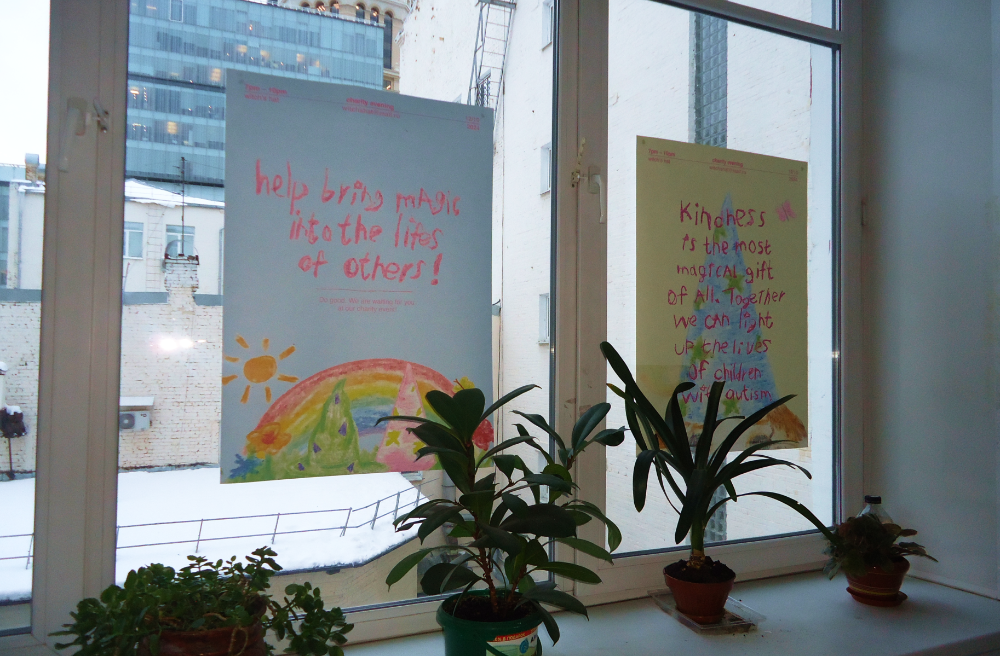
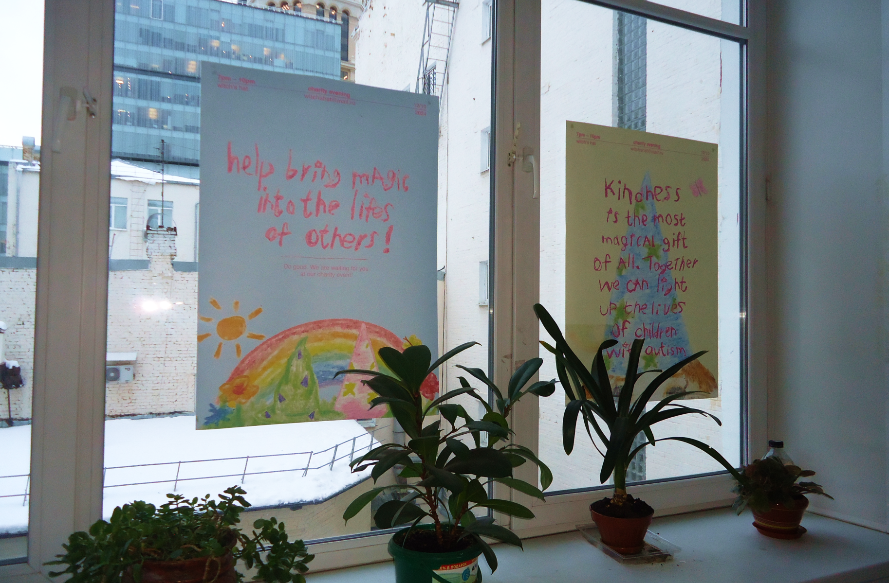
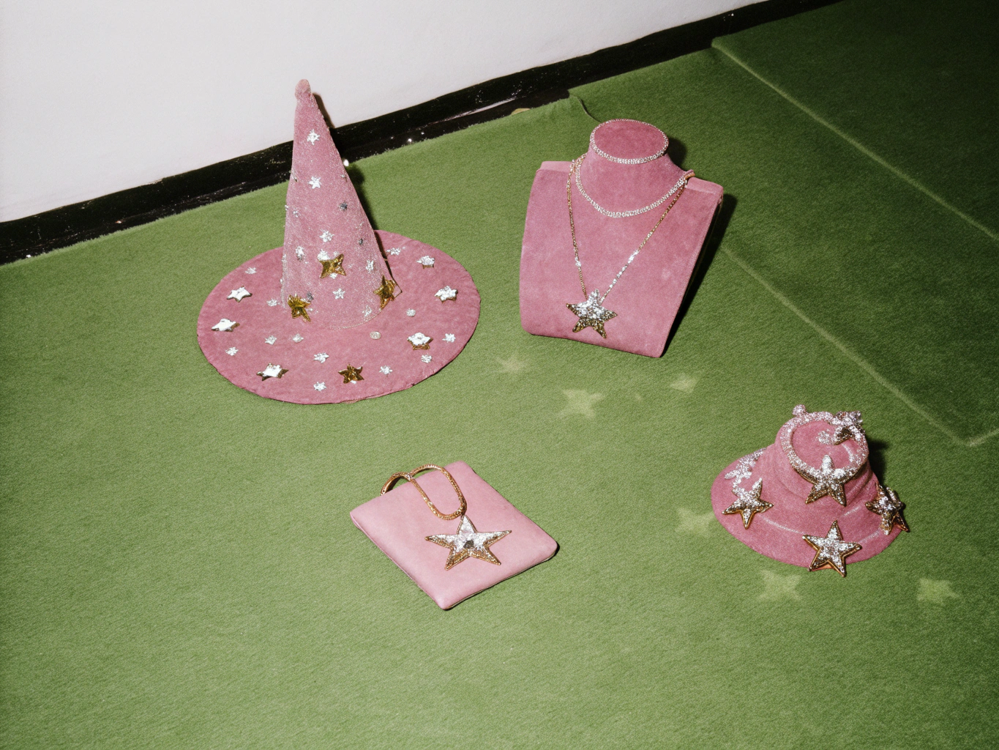
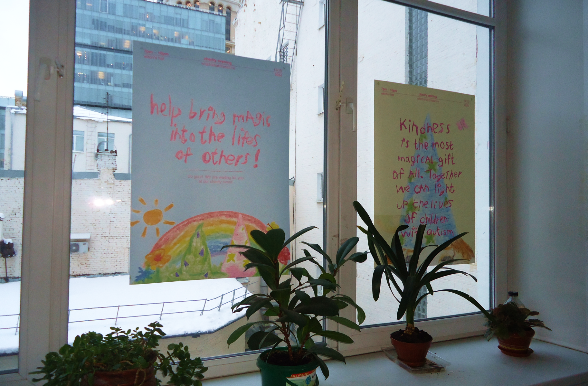

←
WITCH'S HAT &
 


WITCH'S HAT &
YOUNG KINK

Where silver meets spellwork, and nostalgia gets a punk twist — the YOUNG KINK X WITCH’S HAT collaboration is a playful rebellion wrapped in charm.
This collection channels the energy of childhood enchantment with a grown-up edge: think bracelets that hum with secrets, rings that double as amulets, and pendants that feel like tiny acts of defiance.
It’s a tribute to the outsiders, the dreamers, the ones who never let go of their inner weird. Equal parts tender and untamed, these pieces invite you to lean into your magic — not the neat, polished kind, but the messy, expressive chaos that’s all your own.
Because this isn’t just jewelry. It’s spellcraft for the unapologetically offbeat.

We were inspired by a series of charity posters created to support children with autism spectrum disorders. These works are filled with sincerity, light, and a special tenderness of the child’s soul, revealing the world through the lens of innocence and purity that we all need. This feeling — gentle yet strong — became the starting point for our collaborative project.
The YOUNG KINK X WITCH’S HAT collection is born at the intersection of magic, starry skies, and childhood innocence. We wanted to capture the sense of wonder and enchantment that lives in all of us, preserving that same naivety but filtered through rebellion and boldness. Each piece is not just an accessory but a cry of the soul, a statement of freedom and individuality.
WE ARE WAITING FOR YOU IN OUR STORE!